판은 언제나 1레벨부터, 속성 스킬 축복, 기둥 광장 던전, 회피
어제 정식 v2로 장비가 줍는 즉시 자동으로 끼워지고 강화되게 바뀌었어요. 그러고 나니 마을에 쓸모가 줄어든 건물이 눈에 띄었어요.
시간 상점은 이제 쉬어요
시간 상점은 매시간 진열이 바뀌는, 골드로 장비를 사는 가게였어요. 이제는 장비를 던전에서 주우면 바로 비교해서 끼거나, 같은 장비면 강화가 돼요. 상점에서 장비를 살 이유가 거의 없어졌어요. 골드는 축복을 다시 뽑을 때 쓰는 게 더 쓸모 있어요.
그래서 시간 상점 건물을 마을에서 없앴어요. 전에 산 장비는 그대로 남아 있어요.
가는 순서대로 다시 놓았어요
마을 건물은 왼쪽부터 이렇게 놓았어요.
- 거래소(점검 중)와 우편함
- 던전 입구 (1층부터, 이어하기)
- 마을 한가운데 웨이포인트
- 나이트메어 → 헬
- 오른쪽 끝에 골드 던전
일반 던전 다음은 나이트메어, 그다음은 헬이니까, 오른쪽으로 걸어가면 다음 던전이 나와요. 따로 도는 골드 던전은 맨 오른쪽으로 옮겼어요.
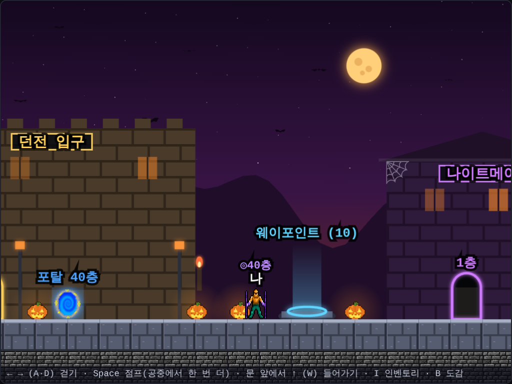
판은 언제나 레벨 1, 1층부터
축복을 판마다 새로 모으는데 레벨은 계속 쌓이면, 판을 거듭할수록 너무 쉬워져요. 그래서 이제 모든 판은 레벨 1, 골드 0, 일반 던전 1층부터 시작해요. 장비는 그대로예요.
- 중간 층부터 시작하던 웨이포인트는 쉬어요
- 나이트메어와 헬은 같은 판에서 앞 던전 50층을 깨고 이어가기로만 들어가요
- 끝이 없는 구멍은 헬 50층까지 깬 판에서만 이어서 들어갈 수 있어요. 한 판에 일반 → 나이트메어 → 헬 → 구멍까지 가는 게 목표예요
그래서 마을에는 거래소, 우편함, 던전 입구만 남겼어요. 대신 던전 입구를 마을 한가운데에 크게 다시 지었어요. 양쪽 탑과 깃발, 빛나는 문장, 큰 화로가 있어요.
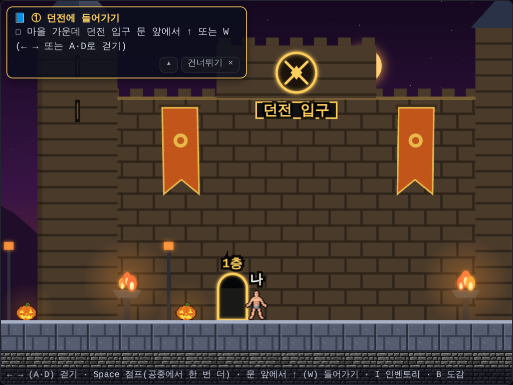
속성 스킬 축복
능력치가 오르는 축복만으로는 조금 심심했어요. 그래서 공격 스킬이 생기는 속성 축복 세 가지를 만들었어요.
- 🔥 화염구: 가까운 적에게 폭발, 맞은 적은 화상
- ❄ 얼음 폭발: 내 주변 적 모두에게 피해, 맞은 적은 느려짐
- ⚡ 연쇄 번개: 적 사이를 튕기며 여러 번 맞힘
처음 고르면 스킬이 생기고, 같은 축복을 또 고르면 단계가 올라 피해·범위·횟수가 커져요. 5단계가 최고예요. 다른 축복보다 자주 나오게 했지만, 매 층 꼭 나오지는 않아요. 그리고 한 판에 세 속성을 모두 최고 단계로 만들 수는 없어서, 어떤 속성을 키울지 고르는 재미가 있어요.
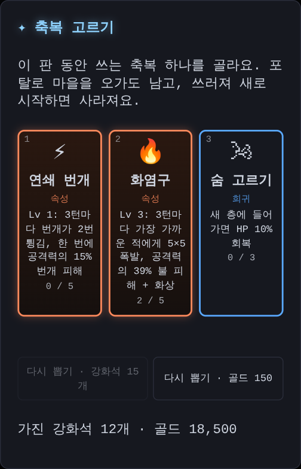
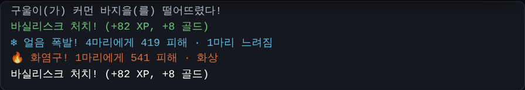
다시 맞춘 밸런스
스킬이 생기니 처음 계산에서는 모든 던전을 거의 다 깨버렸어요. 그래서 Claude Code와 시뮬레이션을 여러 번 돌려 몬스터를 더 세게 맞췄어요. 속성 축복을 고르는 판이라면 한 판으로 끝까지 가는 비율이 일반 약 77%, 이어서 나이트메어 약 90%, 헬 약 45%예요. 속성 축복 없이 가면 30층대가 고비라, 꼭 하나는 키워 보세요.
던전이 넓게 트였어요
해 보니 이제 싸움은 대부분 속성 스킬이 저절로 해 줘요. 그래서 좁은 복도에서 한 마리씩 상대하는 것보다, 넓은 곳에서 몰려오는 몬스터를 스킬로 한꺼번에 쓸어 버리는 쪽이 더 재미있겠다고 생각했어요.
- 던전은 이제 방과 복도가 아니라 동굴처럼 넓게 트인 지역이에요
- 몬스터가 많은 층일수록 지역도 넓어져요. 1층은 화면 한 장 정도지만, 깊은 층은 몇 배로 넓어요
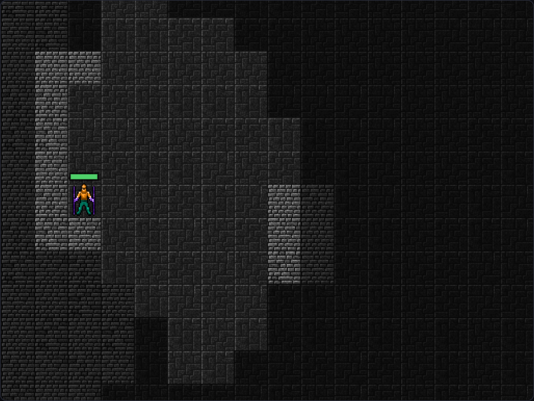
몬스터를 다 잡으면 계단이 나타나요
처음에는 계단이 없어요. 그 층의 몬스터를 모두 쓰러뜨리면, 마지막으로 쓰러진 몬스터 자리에 아래층으로 내려가는 계단이 나타나요.
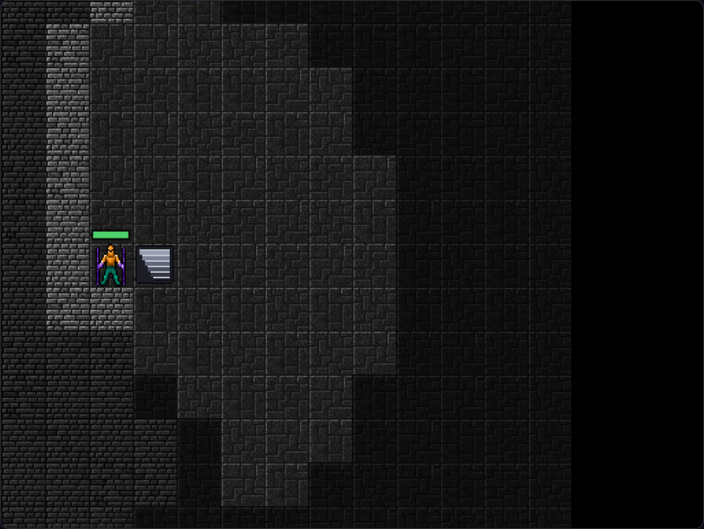
보스 층(5층마다)에서는 몬스터를 다 잡으면 보스가 부하들과 함께 나타나요. 깊은 층일수록 부하가 많아요. 보스와 부하까지 모두 쓰러뜨려야 계단이 나타나요.
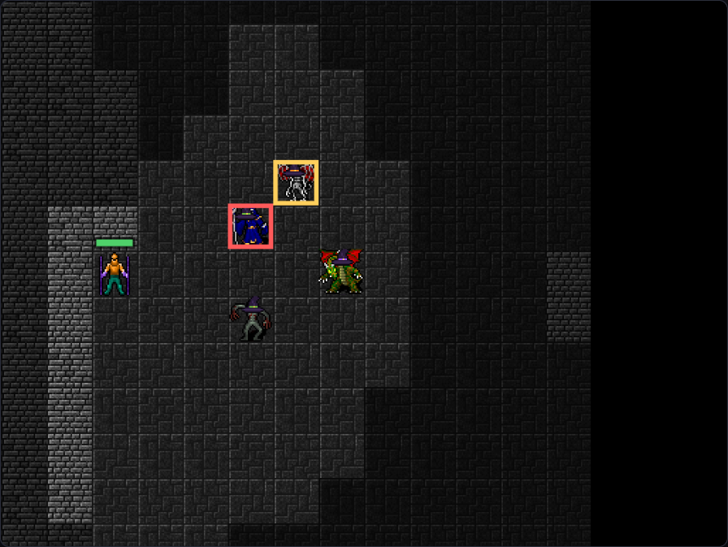
가까이 가면 저절로 주워요
넓어진 만큼 아이템을 하나하나 밟으러 다니기 번거로워요. 그래서 가까이 있는 장비·골드·보물은 지나가기만 해도 저절로 주워요 (처음엔 2칸, 아래에서 1칸으로 바꿨어요).
지도에 중요한 것을 표시해요
전체 지도(M)와 겹쳐 보는 지도(Tab), 3D 화면의 작은 지도에 이런 것들이 아직 가 보지 않은 곳이어도 보여요.
- 노란 !: 보물 자리
- >: 계단 (나타난 뒤에)
- 빨간 왕관: 살아 있는 보스
- ★: 그 층에서 가장 좋은 장비 (등급 색으로)
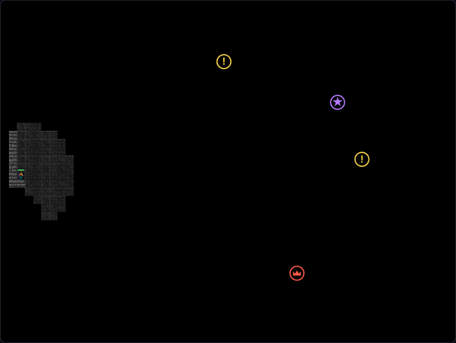
레벨이 쉽게 오르고, 오를 때마다 축복
다음 레벨까지 필요한 경험치를 줄여서 레벨이 더 자주 올라요. 그리고 레벨이 오를 때마다 축복을 하나 더 골라요. 새 층에서 하나, 레벨 업에서 하나씩 모이니 고르는 재미가 훨씬 늘었어요.
속성 축복은 10단계까지
속성 축복의 최고 단계를 5에서 10으로 올렸어요. 단계가 오를수록 피해가 커지고, 중간중간 범위가 넓어지거나 더 자주 나가거나 더 멀리 닿아요. 10단계는 마스터 보너스로 한 번 더 세져요. 한 판에 세 속성을 모두 10단계로 만들 수는 없어서, 둘 중 무엇을 키울지 고르는 재미는 그대로예요.
속성 스킬의 피해는 언제나 내 공격력에 따라 정해져요. 장비와 레벨로 공격력이 오르면 스킬도 같이 세져요. 그래서 축복 카드에 지금 공격력으로 한 번에 주는 피해 숫자도 보여 주게 했어요.
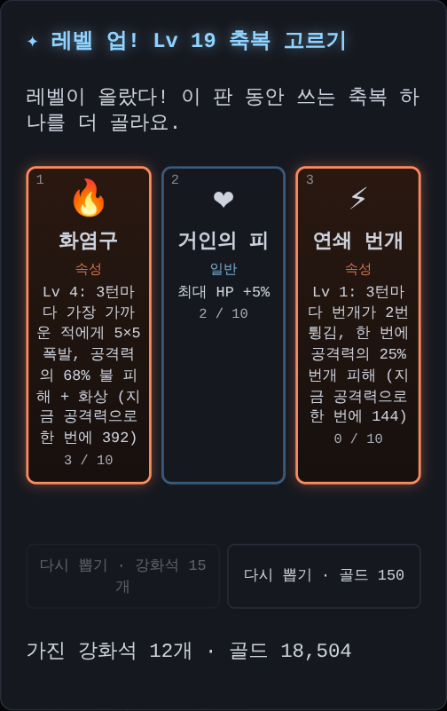
규칙이 많이 바뀌어서 Claude Code와 시뮬레이션으로 몬스터 세기를 다시 맞췄어요. 속성 축복을 고르는 판이라면 한 판으로 끝까지 가는 비율이 일반 약 73%, 이어서 나이트메어 약 92%, 헬 약 44%예요.
점프 대신 회피
넓어진 던전에서는 몬스터에게 둘러싸이기 쉬워요. 그래서 점프 대신 회피를 넣었어요.
- Space(휴대폰은 화면을 톡)를 누르면 움직이던 쪽으로 3칸 굴러가요
- 굴러가는 동안은 무적이라 몬스터 공격이 빗나가요
- 몬스터 사이는 굴러서 지나갈 수 있지만 벽은 못 지나가요. 한 번 쓰면 4턴 뒤에 다시 쓸 수 있어요
- 구를 때 휙 하는 소리가 나요. 마을에서도 똑같이 회피할 수 있어요
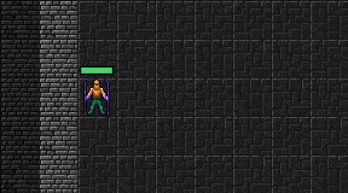
공격도 쉬워졌어요. 붙어 있는 몬스터 쪽으로 누르면 대각선에 있어도 가장 가까운 몬스터를 때려요. 반대쪽으로 누르면 그냥 걸어서 멀어져요. 3D 화면에서는 손이 닿는 가장 가까운 몬스터를 저절로 때려요.
휴대폰은 버튼 없이
휴대폰에서는 방향 버튼과 점프·공격 버튼을 모두 없앴어요.
- 화면을 누른 채 끌면 내 캐릭터에서 손가락 쪽으로 걸어가요. 조이스틱처럼 내 캐릭터가 가운데예요
- 화면을 톡 누르면 회피해요
- 3D 화면은 누른 자리가 스틱 가운데예요. 위·아래로 앞뒤, 좌우로 방향을 바꿔요
- 마을에서도 끌어서 걷고, 위로 끌면 문에 들어가요
버튼이 사라진 자리만큼 던전 화면을 세로로 길게 키웠어요. 3D의 작은 지도도 크게 바꾸고, 멀리 있는 계단이나 보스는 지도 가장자리에 표시해서 어느 쪽으로 가면 되는지 알 수 있어요.
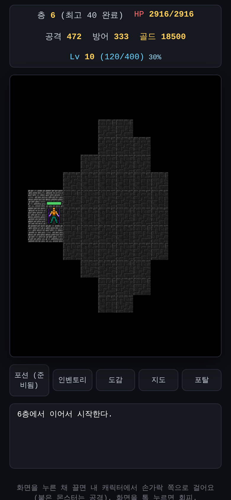
가운데가 뻥 뚫린 기둥 광장
동굴처럼 구불구불한 던전은 넓긴 해도 벽이 여기저기 있어서 답답했어요. 그래서 던전을 가운데가 크게 뚫린 광장으로 바꿨어요.
- 가장자리만 울퉁불퉁한 동굴 벽이고, 안쪽은 넓게 트여 있어요
- 중간중간 기둥이 서 있어서 몬스터를 피해 돌아가거나 몰려오는 몬스터를 나눠 상대할 수 있어요
- 한가운데는 기둥 없이 비워 둔 마당이에요
이리저리 움직이면서 몬스터를 무찌르고, 둘러싸이면 회피로 빠져나오는 게 이번 던전의 재미예요. 처음으로 위험해지면(몬스터 셋에게 둘러싸이거나 HP가 낮을 때) 회피 쓰는 법을 한 번만 알려 줘요.
처음엔 작게, 점점 넓게
1층은 몬스터가 몇 마리 없는데 광장이 너무 넓으면 찾으러 다니기만 하게 돼요. 그래서 몬스터 수에 맞춰 광장 크기를 정해요. 1층은 화면 하나에 다 들어올 만큼 작고, 바깥은 벽으로 막혀 있어요. 깊이 내려갈수록 몬스터가 많아지고 광장도 점점 넓어져요.
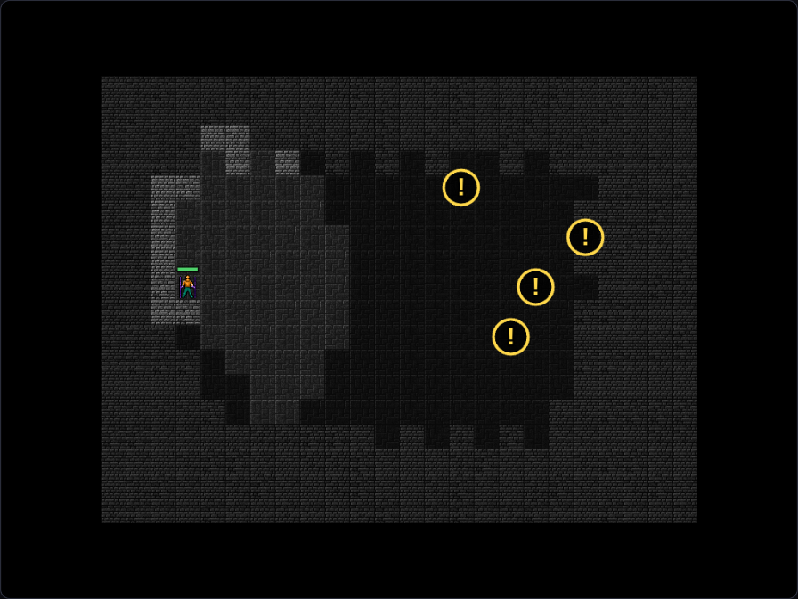
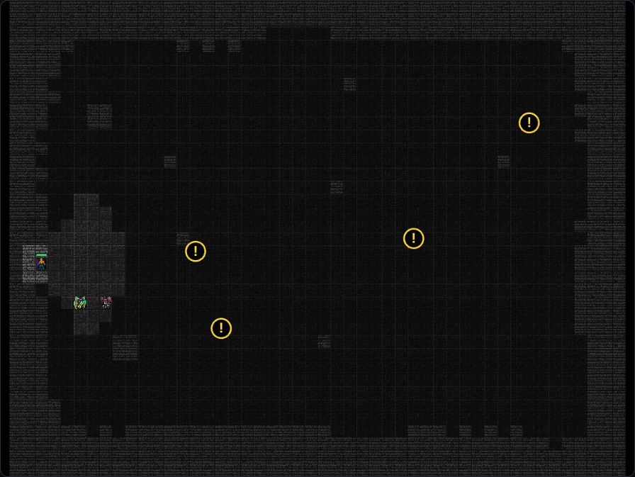
몬스터는 더 많이, 처음부터 마력탄
광장이 넓어지니 몬스터가 띄엄띄엄 있어서 심심했어요. 그래서 몬스터를 두 배로 놓았어요. 대신 한 마리가 주는 경험치와 장비가 떨어질 확률, 골드는 절반이라, 한 층에서 얻는 양은 비슷하고 더 신나게 싸워요.
그리고 처음부터 쓸 수 있는 기본 스킬 마력탄이 생겼어요. 2턴마다 2칸 떨어진 몬스터를 저절로 맞혀요. 바로 옆 몬스터는 칼로, 조금 떨어진 몬스터는 마력탄으로 잡아요.
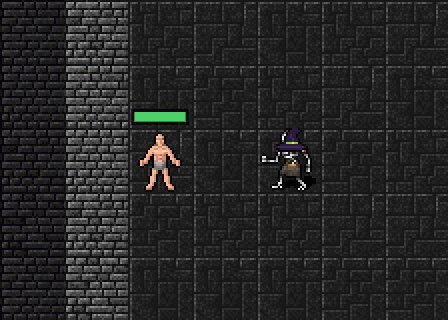
첫 레벨 업은 금방, 바로 스킬을
새 판에서는 몬스터 두셋만 잡으면 바로 레벨 2가 돼요. 첫 레벨 업에서는 화염구·얼음 폭발·연쇄 번개 중 하나를 꼭 배워요. 스킬이 생기면 그때부터 훨씬 쉬워져요.
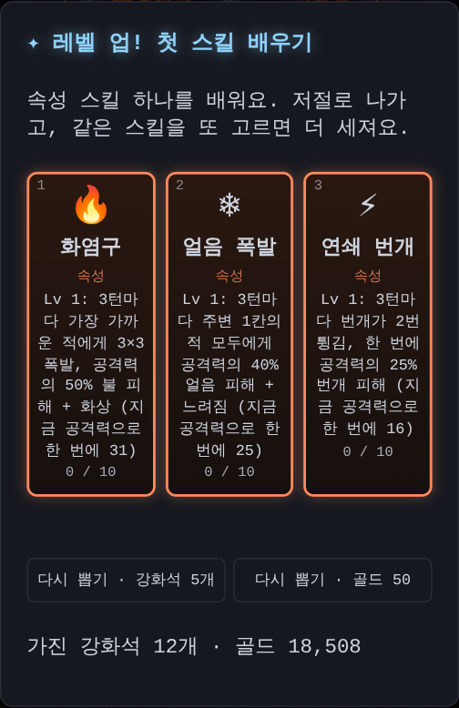
주변 아이템은 지나가기만 해도 저절로 주워요 (3D 화면에서도).
몬스터가 모두 몰려와요
몬스터가 많아져도, 내가 찾아다녀야 하니 시간이 오래 걸렸어요. 그래서 이제 광장의 몬스터는 보이지 않는 곳에 있어도 모두 나를 향해 와요. 기둥과 벽을 돌아 가장 가까운 길로 걸어와요. 가만히 서 있어도 몬스터들이 줄지어 몰려오니, 마력탄과 속성 스킬로 맞받아치고 둘러싸이면 회피로 빠져나오세요. 그만큼 조금 어려워졌어요.
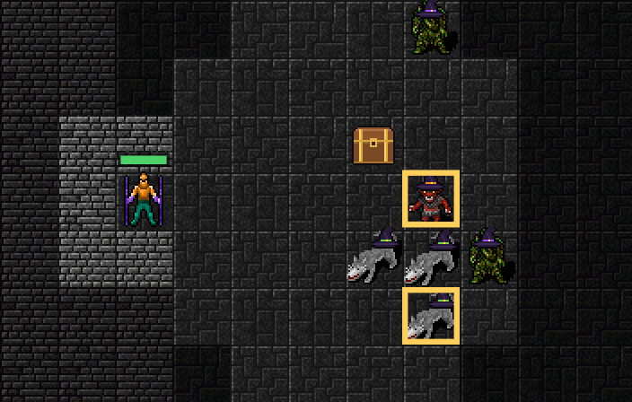
"!"가 뜨면 한 칸 물러나세요
몬스터가 붙자마자 때리니, 방향키로 움직여서는 피할 틈이 없었어요. 그래서 이제 몬스터는 나에게 막 붙은 턴에는 머리 위에 주황색 "!"를 띄우고 공격을 준비만 해요. 다음 턴에도 붙어 있으면 그때부터 때려요.
"!"를 보면 방향키로 한 칸 물러나세요. 공격이 빗나가고, 따라온 몬스터는 다시 "!"부터 시작해요. 한 마리는 이렇게 피하면서 마력탄과 속성 스킬로 잡을 수 있어요. 여러 마리에게 둘러싸여 물러날 곳이 없을 때는 회피를 쓰세요.
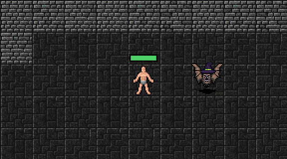
20층부터는 멀리서 던지는 몬스터
뒤로 갈수록 몬스터가 붙어서 때리기만 하니 싸움이 비슷비슷했어요. 그래서 일반 던전 20층부터 몬스터 다섯 중 하나쯤은 원거리 몬스터가 돼요. 왼쪽 위에 빨간 다이아몬드가 붙어 있어요. 이 몬스터는 붙지 않고 몇 칸 떨어져서 저주 구슬을 던져요.
던지기 전에 꼭 알려 줘요. 내가 서 있는 자리 둘레 3×3칸이 붉게 칠해지고, 모서리에 남은 턴(2 → 1)이 보여요. 그 안에 두 턴이 지나도록 있으면 꽤 아프게 맞지만, 방향키로 두 칸 걸어 나가거나 회피를 쓰면 구슬이 빈 바닥에 떨어져요. 3D 화면은 바닥이 붉게 물들고 1.5초쯤 여유가 있어요.
내 스킬과 헷갈리지 않게 구슬은 검붉은색이에요. 곧게 날아와서 떨어진 자리에 가시가 솟아요. 가까이 다가가면 뒤로 물러나지만 두 턴에 한 번만 물러나서, 쫓아가면 잡을 수 있어요.
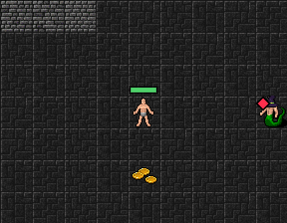
아이템 자동 줍기는 주변 1칸으로 줄였어요. 바로 옆에 떨어진 것만 저절로 주워요.
다음에는
이제 넓어진 던전에서 1층부터 새로 시작해 보면서 축복과 속성 스킬이 잘 맞는지 직접 확인할 거예요. 그다음에는 등급과 던전마다 다른 장비 모습과, 고른 모습을 입는 옷장을 만들 예정이에요.